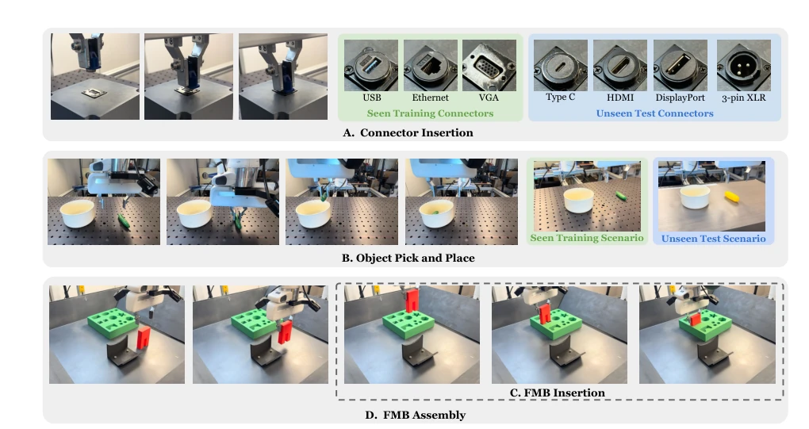
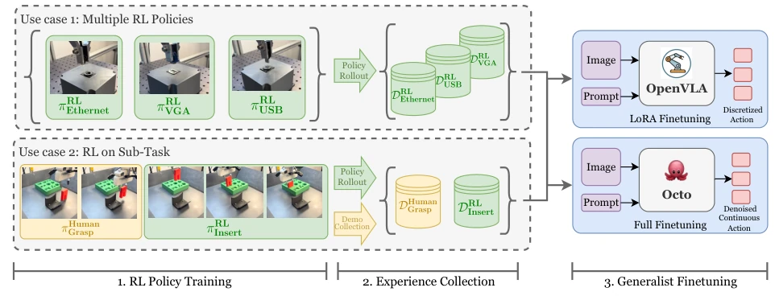
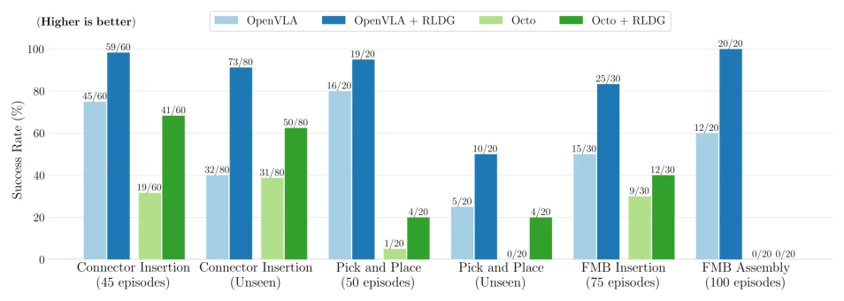
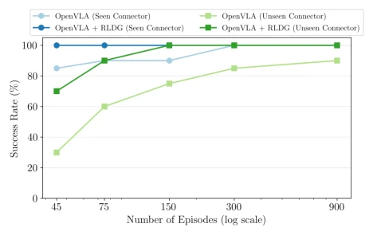
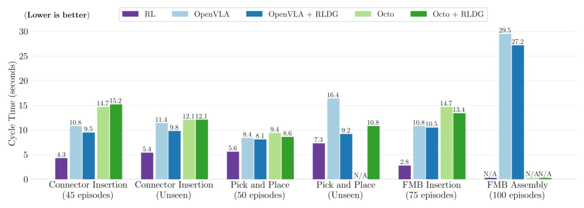
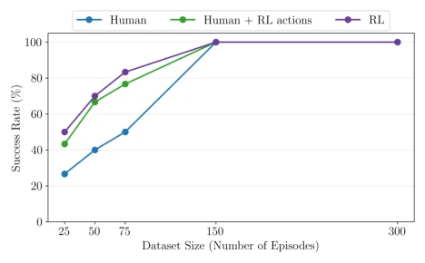
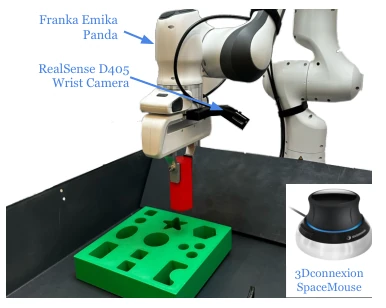

This paper employs a strategy of "borrowing strength to strike back," using Reinforcement Learning (RL) generated data to distill robot foundation models. Simply put, it means letting RL act as a "data worker," doing the dirty work for humans. Although it sounds very promising, the core pain point lies in: human demonstrations are too prone to "trembling" or inconsistency in fine manipulation, while directly fine-tuning large models easily leads to catastrophic forgetting. RLDG attempts to compensate for the roughness of human demonstrations using RL's precise action distribution. However, this method has a hard flaw: you must design the reward function first; if task rewards are hard to define, this "worker" becomes unemployed. Moreover, for speed, RL policies sometimes "take shortcuts," causing the distilled model to drop objects more easily in certain edge cases. Overall, it is a clever engineering trick, but still far from general automation; the design threshold of the reward function remains a major pitfall, and it is sensitive to inference speed.
研究动机Motivation
机器人基础模型（如 OpenVLA, Octo）虽然泛化强，但在精细接触操作中表现不佳，因为人类演示数据质量参差不齐（Brohan et al., 2023a; Kim et al., 2024）。人类操作存在风格差异和执行不一致，导致模型难以学习鲁棒策略，特别是在高接触密度的任务中（Luo et al., 2024d）。直接对基础模型进行 RL 微调面临优化不稳定和遗忘问题。因此，需要一种能生成高质量、高一致性数据的方法，既保留基础模型的泛化性，又具备 RL 的精准控制能力。现有工作多依赖人类遥操作，但难以满足精密装配需求，且数据收集成本高。RLDG 旨在解决这一数据质量瓶颈，通过 RL 自动化生成更优轨迹，减少对人工示范的依赖。
Robot foundation models (such as OpenVLA, Octo) although have strong generalization, perform poorly in fine contact operations because human demonstration data quality varies (Brohan et al., 2023a; Kim et al., 2024). Human operations exhibit style differences and execution inconsistency, leading to models struggling to learn robust policies, especially in high contact density tasks (Luo et al., 2024d). Directly performing RL fine-tuning on foundation models faces optimization instability and forgetting issues. Therefore, a method capable of generating high-quality, high-consistency data is needed, which retains the generalization of foundation models while possessing the precise control capability of RL. Existing work mostly relies on human teleoperation, but is difficult to meet precision assembly requirements, and data collection costs are high. RLDG aims to solve this data quality bottleneck, generating superior trajectories via RL automation, reducing dependence on human demonstrations.

Figure 3: Illustrations of tasks used to evaluate RLDG. (A) Precise Connector Insertion includes three training objects and four unseen test objects for evaluating policy generalization. (B) Pick and Place involves an unseen scenario that tests the policy’s visual robustness to different backgrounds and objects. (C) FMB Insertion involves inserting a pre-grasped object in a moving board while (D) FMB Assembly starts with the object on the table and involves an additional grasping phase.
The RLDG process is divided into three steps: first, train a dedicated RL policy for specific tasks (e.g., using HIL-SERL), making it converge to the optimal action distribution; second, collect Rollout data from these RL policies, constructing a high-quality fine-tuning dataset; finally, use this data to perform supervised fine-tuning on pre-trained foundation models (OpenVLA or Octo). This method is flexible, capable of using RL data for key bottlenecks of multi-stage tasks (such as insertion steps), while using human demonstrations for the rest. For OpenVLA, LoRA fine-tuning is used; for Octo, the diffusion head is directly fine-tuned. This distillation method decouples the optimization capability of RL from the generalization capability of foundation models, avoiding the instability of directly fine-tuning large models with RL. Input modalities are mainly wrist camera images, action space is 6-dimensional end-effector incremental pose, ensuring compatibility between data and model architecture.

Figure 1: RLDG improves generalist robot policies like OpenVLA and Octo by training with specialist RL policies and using them to generate high-quality fine-tuning datasets. It has the flexibility to distill knowledge from multiple RL policies trained on individual narrowly scoped tasks into a single generalist. It can also be applied to the most critical sub-task of a long-horizon manipulation task, improving the success rate at the “bottleneck" while leveraging human demonstrations on parts of the task where it suffices.
Tested on real tasks such as connector insertion, FMB assembly, etc. Results show that the success rate of the RLDG fine-tuned model is 30%-50% higher than human demonstrations, and generalization in unseen scenarios improves by 50%. In terms of sample efficiency, achieving 100% success rate requires only 45 RL trajectories, while human demonstrations require 300. Ablation studies indicate that the RL data advantage mainly comes from superior action quality (more concentrated action distribution), rather than state distribution. However, in Pick and Place tasks, the fast policy generated by RL causes the distilled model to sometimes release too early. Overall, it proves that RL data is a more efficient fine-tuning source than human demonstrations, especially in contact-dense tasks. Additionally, RL data can also shorten execution cycle time, although limited by inference frequency.

Figure 4: Success rate comparison of OpenVLA and Octo policies fine-tuned with RLDG versus conventional methods using human demonstrations. Both generalists trained with RLDG consistently outperform their counterparts trained with the same number of successful expert human demonstrations in both training and unseen scenarios.

Figure 5: Success rate of OpenVLA policies fine-tuned on different sizes of RL-generated and human-collected datasets. When evaluated on seen (VGA) and un- seen (Type C) Connector Insertion tasks, RLDG shows superior sample efficiency, requiring significantly fewer demonstrations to achieve perfect success rate in both scenarios while the performance of conventional method saturates in the unseen case.

Figure 6: Cycle time comparison between policies trained with RL data versus human demonstrations. N/A for RL in FMB Assembly denotes policy not trained on the whole task, while N/A for fine-tuned policies denotes no successes recorded. The RL-trained policies generally achieve faster execution times across tasks, demonstrating the efficiency benefits of using RL-generated data for policy training.

Figure 7: Fine-tuning success rate on the FMB insertion task with different fine-tuning data sources and varied dataset sizes (from 25 trajectories to 300 trajectories). Hu- man: demo trajectories collected by human teleoperators. Hu- man + RL actions: the same human demo trajectories but with all the actions relabeled by a trained RL agent. RL: rollouts collected by the RL agent. RL data consistently provide better fine-tuning performance than human data. Human + RL actions closes the gap mostly, suggesting that most of the benefits of RL data come from it having better action quality.
其他图片Other Figures

Figure 2: We use a Franka Emika Panda arm with a par- allel jaw gripper teleoperated by a 3Dconnexion Space- Mouse device. There is a single RealSense D405 camera mounted on the robot’s wrist for image observations.